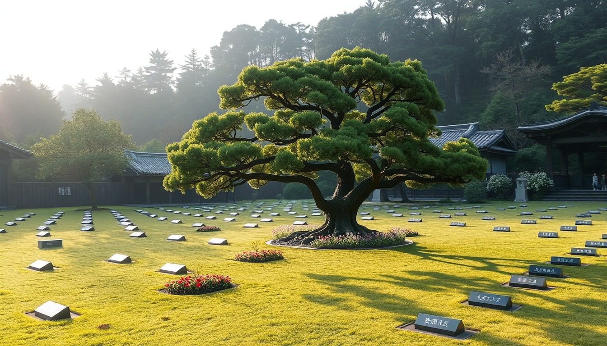
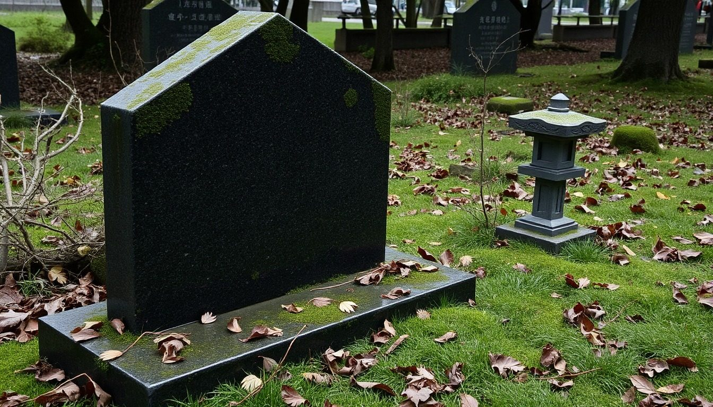
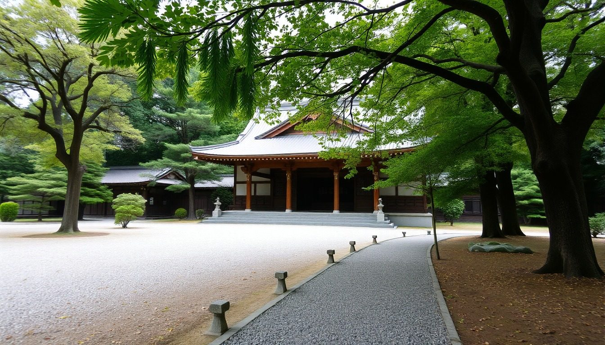
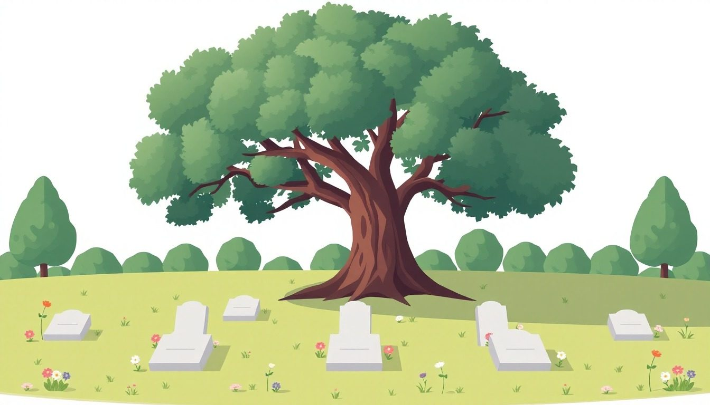

お墓が遠くても、ご自身が県外でも手配できます。現地の立会いは不要。内訳と手順を先にお見せするので、相場より高い見積に気づけます。
紹介は無料です。改葬許可の手続き代行は行いません（行政書士の業務です）。

跡を継ぐ人がいなくても大丈夫です。合祀型の永代供養墓（数万円から）や樹木葬に移せば、管理を引き継ぐ人は要りません。先に納骨先を決めるのが順番です。
現地に行かなくても進みます。区画のサイズと写真で概算が出て、立会いが必要な場面だけ石材店から事前に相談があります。
「遠方で管理が難しくなり、供養を続けられる形に変えたい」と、感謝から相談の形で伝えます。伝え方の例文をお渡しし、石材店が同席することもできます。
法律で決まった額はありません。相場は数万円〜20万円ほど。高額な請求に応じる義務はなく、言い値で払う前にご相談ください。
決まっていなくて大丈夫です。永代供養・樹木葬・手元供養の費用の幅と選び方から、一緒に整理します。納骨先が決まってから撤去、が順番です。
費用の内訳と手順を1枚にして、家族で共有できる形にします。まとまってから相談する必要はありません。

急がせるつもりはありません。ただ、お墓の場合は、決められる人が年ごとに減っていきます。順番だけは、先に決めておいてください。
ここまで読んで、胸が重くなった方へ。
守れる形に変えて、供養を続けるための手続きです。遠くて行けないまま無縁になるより、手の届く場所に移して、これからも手を合わせる。そう選んだ方は、2010年度の72,180件から2023年度の166,886件へ、この10年あまりで倍以上に増えています（政府統計・衛生行政報告例の改葬件数）。お寺への相談も手続きも、石材店が一緒に進めます。ひとりで抱える必要はありません。
石材店からあなたへ、営業の電話は行きません。断るときは、事務局が代わりに伝えます。

信頼できる石材店に、大切なお客様をつなぐ窓口です。
こんなふうに進みます。
お寺にどう切り出せばいいのか分かりません。長くお世話になっているので、角が立つのが怖くて。
その後：例文をもとにご自身でお寺へ相談。離檀料はお布施として合意。石材店2社の見積を並べて、閉眼供養と撤去の日程を決定。
跡を継ぐ人がいません。自分が動けるうちに整理したいのですが、遺骨をどうすればいいのか。
その後：納骨先の費用の幅を1枚にして家族と共有。千葉の永代供養墓に決めてから、新潟の石材店に撤去と改葬の書類の案内を依頼。
「一式60万円」の見積をもらいましたが、高いのか安いのか分かりません。
その後：内訳付きの見積を3社から取得。撤去費に差があり、同じ工事内容でいちばん安い石材店へ。
※ご相談の例です。個人が特定される内容は含みません。
先に内訳を知っておくと、損をしません
同じお墓でも、頼み方で総額が変わります
1社に直接頼むと、「一式」の見積しか出ません。案内所は、撤去・手続き・納骨先に分けて、最大3社の見積で並べます。
1社に直接頼むと「一式○○万円」。相場より高くても気づけない
案内所で並べると㎡単価と内訳で、最大3社を並べて比べられます
1社に直接頼むと決まった額がないまま、言い値で払う
案内所で並べると相場と伝え方の例を先にお渡し。石材店が相談に同席することもできます
1社に直接頼むと撤去してから探して、遺骨の置き場所に困る
案内所で並べると先に納骨先の費用の幅を整理してから撤去。順番で無駄が出ません
1社に直接頼むと改葬許可やお寺への連絡を、自分で調べながら進める
案内所で並べると手順を1枚にまとめ、石材店に任せられる範囲もお伝えします
先に並べてから決める。それが、費用の面で損をしない順番です。
一般的なお墓（1〜3㎡）の目安。差がつくのは撤去・離檀料・納骨先の3つです。
金額は一般的な目安です。地域とお墓の状態で変わります。
この条件に当てはまるときは、先に伝えておくと、後から足されません。
撤去・離檀料・納骨先。この3つで、同じお墓の総額が数倍変わります。

金額は一般的な目安です。実際の費用は現地の見積で確定します。
墓じまいのご相談で、よく伺うお悩みです。
50代・男性・神奈川在住
年に一度の帰省が、お墓の掃除だけで終わります。草を抜いて花を替えて、日帰りで戻る。あと何年続けられるのか。
70代・男性・新潟市在住
両親のお墓と祖父母のお墓が、別のお寺にあります。二つは守れないので、一つにまとめたい。
40代・女性・長岡市在住
母が施設に入り、お墓のことは私に任されました。檀家のつきあいも寄付も、正直どうすればいいのか分かりません。
60代・女性・東京在住
兄は「放っておけばいい」と言いますが、無縁墓になるのは嫌です。家族の意見がまとまりません。
※お悩みの例です。個人が特定される内容は含みません。
お寺への相談から納骨まで、2〜3か月が目安。順番を間違えると、遺骨の置き場所に困ります。
期間は一般的な目安です。お寺の都合と納骨先の手配で変わります。
全国。お墓のある市区町村で対応できる石材店を手配します。ご自身が遠くにお住まいでも、お墓が離れた場所にあっても手配できます。
撤去・手続き・新しい納骨先の3つの合計で、相場は35万〜150万円です。撤去は区画の広さ、納骨先は選ぶ形で大きく変わります。
お寺への相談から納骨まで、2〜3か月が目安です。改葬許可の申請と納骨先の手配に時間がかかります。
法律で決まった額はありません。相場は数万円〜20万円ほどと言われています。高額な請求に応じる義務はなく、まず丁寧に相談するのが近道です。
「遠方で管理が難しくなり、供養を続けられる形に変えたい」と、先に相談の形で伝えます。例文をお渡しします。
当社は代行しません（有償の代理は行政書士の業務です）。必要書類の一覧と役場の窓口はお伝えします。
できます。納骨先の費用の幅と選び方から一緒に整理します。納骨先が決まらないと撤去は進められません。
多くの場合、区画サイズと写真で概算の見積ができます。立会いが必要な場面は石材店から事前にご相談します。
最大3社まで。どの石材店から連絡が来るかは事前にお伝えします。まず1社からの連絡で、必要なら追加します。
当社への費用はかかりません。当社は対応した石材店から紹介料を受け取ることがあります。お客様が払うのは、実際に依頼した撤去や納骨先の費用だけです。
もちろんです。見積を見て納得できなければ、断って構いません。費用はかかりません。
1分で入力できます。撤去から納骨先まで相談できるお墓のある地域の石材店から、1〜2営業日を目安にご連絡します。
お電話の窓口は置いていません。担当が現地の会社と直接やり取りするため、フォームでいただいた方が早くご連絡できます。1〜2営業日でこちらからお電話します。